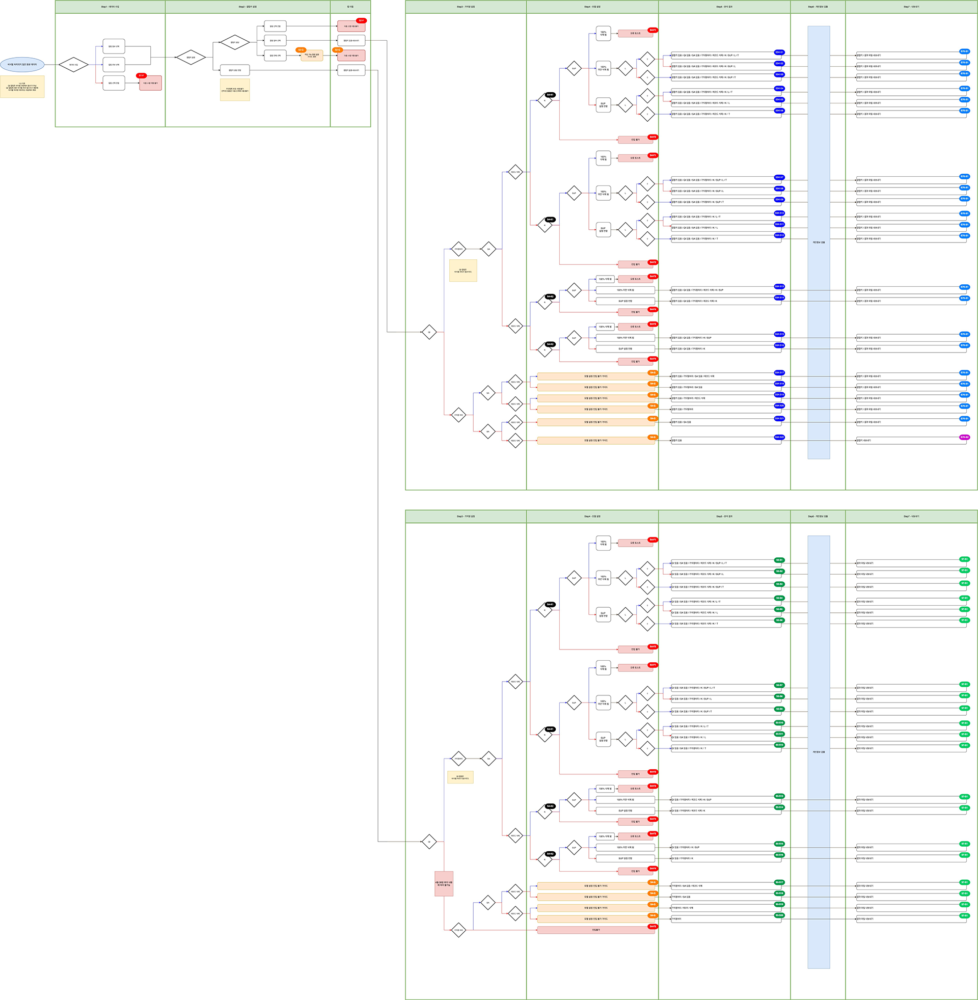
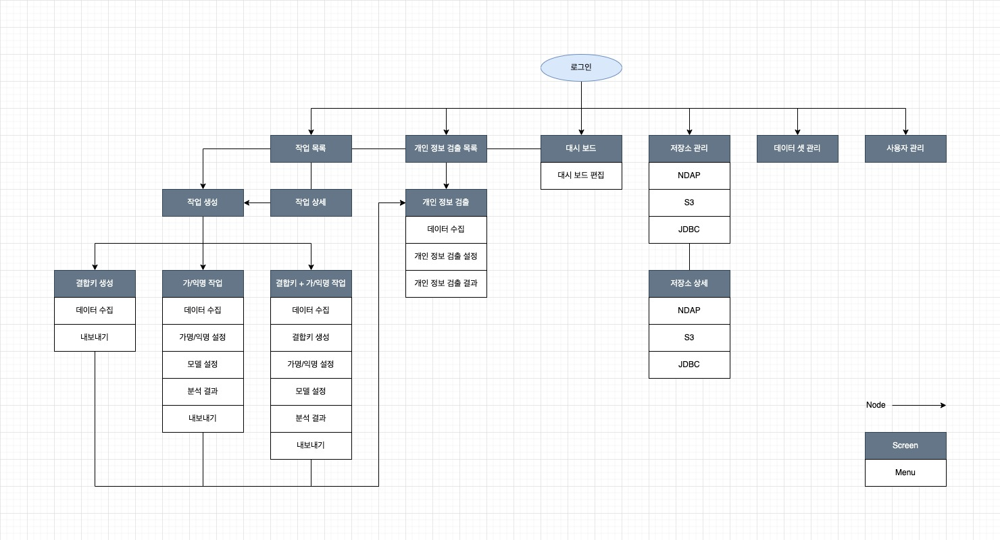

-
02
Overview
-
해당 페이지에서는 UX에 관련된 내용만 노출됩니다.
-
- UX 리서치
- 경쟁사 분석
- 타깃 조사
- 비식별 / 개인 정보 논문 분석
- 주요 기능 분석
- 트렌드 분석
-
- UX 디자인
- 유저 맵 제작 및 아이데이션
- 기능 명세서 작성
- IA 작성
- 와이어 프레임 제작
- 워크 플로우 제작
-
- 브랜딩
- 키워드 도출
- 로고 디자인
- Look & Feel 정의
-
- UI 디자인
- UI 디자인
- UI 디자인 시스템 정의
- 프로토타입 제작
- 제플린 가이드 제작
- 스토리보드 제작
-
- QA
- 테스트 케이스 작성
- 디자인 검수서 작성
- 이슈 대응
-
- 릴리즈
- 2021.05 1.0v 릴리즈
- 이후 2.0 개발 중
-
-
03
Brnading & UI
-
UX 외 내용은 아래 이미지를 클릭하여 확인하실 수 있습니다.
-
04
Issue & Goal
-
인터뷰 결과, 비식별 솔루션은 마케터 / 기획자와 같이 비 개발자가 필요에 의해 사용한다는 것을 알 수 있었습니다. 이들은 짧은 교육을 받은 후 실무에 들어가기 때문에, 막상 툴을 지급하면 큰 어려움을 느꼈습니다. 그 이유는 관련 용어들이 너무 어렵고, 익숙한 솔루션이 아니기 때문이었습니다. NEA에서는 이런 사용자들의 불편함을 여러 방향으로 해결하려 했습니다.
Issue
-
-
어려움
단어가 생소하고 어렵다.
-
복잡함
관련 지식이 없어 무엇부터 해야할지 모르겠다.
-
헷갈림
기법이 너무 많고, 설정이 무엇을 의미하는지 모르겠다.
-
Goal
-
-
언어 순화
단어를 한글로 쉽게 만들어보자.
-
스텝
초보 사용자도 사용할 수 있도록 순서를 제공하자.
-
문장형
기법을 카테고리화 하고, 설정을 문장형으로 제공하자.
-
-
04 -1
언어 순화
-
비식별 관련 단어를 어려워하는 사용자를 위해, 문서에서 자주 사용하는 영문을 한글화했습니다. 또한 약어 표시 및 내용이 함축되어 있는 단어를 풀어, 사용자가 쉽게 이해할 수 있도록 언어를 순화하는 작업을 진행했습니다.
-
변경 전
Record
Suppression
Class Size
Average Class Size
Number of Class
Privacy Data
Suppressed Record
Anonymized data
Anonymized excluded data
Population Uniqueness
RE-ID AVG (%)
SUP (%)
PREC (%)
L
ENT
DM
-
변경 후
행
삭제 허용 범위
동질 집합 내 데이터 수
동질 집합 내 평균 데이터 수
동질 집합의 개수
원본 데이터
삭제 된 행의 수
삭제 전 비식별 처리 데이터
삭제 후 비식별 처리 데이터
모집단 유일성
재식별 평균 확률 (%)
삭제 된 범위 값 (%)
정밀도 (%)
L-다양성
불확실성
분별력
-
04 -2
순서대로
-
비식별 작업 진행 시 무엇부터 해야 할지 헷갈려 하는 사용자를 위해, 문서를 분석하여 최적화된 Step을 설정했습니다. 이를 통해 사용자는 버튼 하나만으로 작업을 시작할 수 있으며, 선택지에 따라 약 80가지의 케이스를 얻을 수 있습니다.
# 가명 / 익명 작업 시 Flow 정리
-
데이터 수집가명 / 익명 처리에 필요한 데이터를 로컬 및 외부 저장소를 통해 수집합니다.
-
결합키 생성수집된 데이터에서 데이터 결합에 필요한 결합키를 선택 및 생성합니다.
-
가명 / 익명 설정각 컬럼에 대해 가명 / 익명 처리를 적용합니다. 이때, 결합키에서 선택된 데이터는 가명 / 익명 처리가 불가능합니다.
-
모델 설정K-익명성, L-다양성, T-근접성에 대한 제한을 설정합니다.
-
분석 결과가명 익명 처리에 대해 분석하여, 정보를 수치화합니다.
-
개인 정보 검출분석 완료 데이터 / 분석 전 데이터에 개인 정보가 포함되어 있는지 점검합니다
# 시나리오 점검
-
04 -3
문장형
-
사용자는 기법이 너무 다양하고, 설정 항목이 많아 비식별 설정을 어려워했습니다. 이를 해결하기 위해 기법을 카테고리화하여 구조를 잡고, 설정을 문장형으로 제공하여 쉽게 이해할 수 있도록 유도했습니다.
-
05
규격서 작성
-
위의 컨셉을 반영하여 약 200장 분량의 규격서를 작성했습니다. 그 결과 NE Anonymous는 NE Enterprise 서비스 중 가장 먼저 출시되었지만, 가장 좋은 평가를 받는 서비스가 되었습니다.
# Information Architecture 1.0ver
# 화면 구성 및 규격서 작성